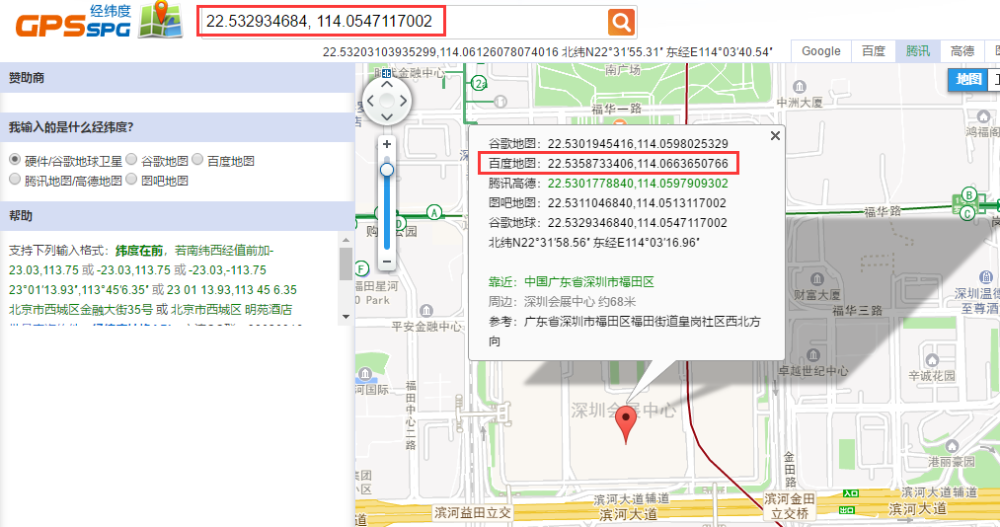

leaflet使用百度地图，叠加层使用硬件/谷歌坐标。
leaflet默认使用硬件/谷歌坐标，使用百度地图需要进行坐标偏移。就是把
硬件/谷歌坐标转换成
百度坐标。
此方法是直接在地图投影方法出设置偏移。具体如下：
- 1、引入支持leaflet的proj4(https://github.com/kartena/Proj4Leaflet)
- 2、引入自定义百度地图层 tileLayer.baidu.js
- 3、leaflet地图初始化时crs参数设置为L.CRS.Baidu,layers设置为L.tileLayer.baidu
示例：
22.532934684, 114.0547117002是谷歌地图坐标

源码：
<html>
<head >
<script src="ui/js/jquery-1.11.3.min.js" ></script >
<script src="ui/leaflet1.3/leaflet-src.js" ></script >
<script src="ui/leaflet1.3/Proj4Leaflet/lib/proj4.js" ></script >
<script src="ui/leaflet1.3/Proj4Leaflet/src/proj4leaflet.js" ></script >
<script src="ui/leaflet1.3/leaflet-baidu/tileLayer.baidu.js" ></script >
</head >
<body >
<div id="mapdiv" ></div >
</body >
<script type="text/javascript" >
<!--
$(document).ready(function(){
var options = {
center: [22.532934684, 114.0547117002],
zoom: 15,
crs: L.CRS.Baidu,
layers: [new L.tileLayer.baidu({ layer:
'custom',customid:'midnight'})]
};
var map = L.map("mapdiv", options);
L.marker([22.532934684, 114.0547117002]).addTo(map).bindTooltip("会展中心").openTooltip();
});
//-- >
</script >
</html >